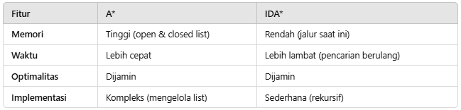

ULANGAN AKHIR SEMESTER
PENGANTAR KECERDASAN BUATAN
Dosen Pengampu : Bla Bla Bla
Nama Mahasiswa : Ble Ble Ble
NIM Mahasiswa : Blu Blu Blu
FAKULTAS ILMU KOMPUTER
PROGRAM STUDI TEKNIK INFORMATIKA
UNIVERSITAS GING GANG GOOLIE
JAKARTA
2024/2025
Dalam dunia algoritma pencarian dan optimasi, A* dan turunannya seperti IDA* adalah metode yang sangat relevan, terutama untuk permasalahan pencarian jalur (pathfinding) dalam graf atau ruang status yang besar. Algoritma A* memadukan pendekatan greedy dengan eksplorasi menyeluruh untuk memastikan solusi optimal, sedangkan IDA* mengurangi kebutuhan memori dengan memanfaatkan teknik pencarian berbasis kedalaman yang berulang.
Pentingnya algoritma ini terlihat dalam berbagai aplikasi, seperti navigasi robot, permainan AI, dan pengoptimalan penjadwalan. Namun, setiap metode memiliki kelebihan dan kekurangan yang perlu dianalisis untuk menentukan penerapannya secara efektif.Di sisi lain, algoritma seperti Greedy juga memegang peranan penting dalam memecahkan persoalan optimasi di berbagai bidang, termasuk penjadwalan. Algoritma Greedy bekerja dengan pendekatan langkah demi langkah, memilih solusi terbaik pada setiap langkah untuk mencapai hasil mendekati optimal. Salah satu contoh penerapannya adalah pada sistem penjadwalan mata pelajaran di SMK Nurul Islam Cianjur. Algoritma ini mampu mengoptimalkan penggunaan ruangan kelas, mengurangi waktu pembuatan jadwal, dan meminimalkan konflik penjadwalan dibandingkan dengan metode manual.
Secara spesifik, penelitian ini bertujuan untuk:
Analisis Efisiensi dan Optimalitas: Menilai kemampuan algoritma A* dan IDA* dalam menemukan solusi optimal, terutama dalam konteks graf besar.
Komparasi Heuristik: Mengevaluasi dampak kualitas heuristik terhadap kinerja algoritma, termasuk kecepatan eksekusi dan jumlah simpul yang dieksplorasi.
Penerapan Praktis: Menguji implementasi algoritma pada kasus nyata, seperti penjadwalan berbasis kapasitas atau pencarian jalur pada grid 2D.
Identifikasi Keterbatasan: Mengungkapkan kekurangan setiap algoritma, seperti ketergantungan A* pada memori besar dan IDA* pada waktu eksekusi, untuk memberikan rekomendasi dalam penggunaannya.Mengevaluasi kinerja algoritma Greedy dalam menyelesaikan persoalan optimasi, khususnya dalam penjadwalan.
Membandingkan efisiensi algoritma Greedy dengan metode manual dalam konteks penggunaan ruang kelas dan waktu eksekusi.
Penelitian ini diharapkan dapat memberikan wawasan baru yang bermanfaat untuk pengembangan algoritma sorting yang lebih efisien, baik dalam konteks pendidikan maupun aplikasi praktis di bidang teknologi informasi.
Algoritma A* bekerja dengan memanfaatkan dua komponen utama: graf pencarian dan heuristik. Graf terdiri dari simpul (nodes) dan sisi (edges), di mana setiap sisi memiliki bobot yang merepresentasikan biaya perjalanan antara dua simpul. A* menggabungkan dua fungsi dalam proses pencariannya:
g(n)g(n)g(n): Biaya aktual dari simpul awal ke simpul saat ini.
h(n)h(n)h(n): Estimasi biaya tersisa dari simpul saat ini ke simpul tujuan, yang disebut heuristik.
Fungsi utama yang digunakan adalah f(n)=g(n)+h(n). Simpul dengan nilai f(n) terkecil diprioritaskan untuk dieksplorasi, yang memungkinkan algoritma fokus pada jalur yang paling menjanjikan.
Keberhasilan algoritma A* sangat bergantung pada kualitas fungsi heuristik. Beberapa heuristik yang umum digunakan:
Manhattan Distance: Digunakan pada grid, menghitung jumlah langkah horizontal dan vertikal. h(n) = |x1 – x2| + |y1 – y2|
Euclidean Distance: Digunakan untuk ruang kontinyu, menghitung jarak garis lurus: h(n) =
Octile Distance: Digunakan pada grid dengan pergerakan diagonal: h(n)= max(|x1 – x2|, |y1 – y2|)
Heuristik harus admissible (tidak melebih-lebihkan biaya ke tujuan) dan consistent (tidak melanggar segitiga) agar menjamin solusi optimal.
Pada peta grid 2D dengan dimensi 10x10, simpul merepresentasikan koordinat, dan sisi merepresentasikan pergerakan ke simpul tetangga.
Eksperimen 1: Menggunakan heuristik Manhattan, hasilnya jalur ditemukan dengan 25 simpul yang dieksplorasi.
Eksperimen 2: Menggunakan heuristik Euclidean, simpul yang dieksplorasi hanya 20, menunjukkan efisiensi lebih tinggi.
Pada graf yang lebih besar, algoritma A* tetap efisien dibandingkan dengan Dijkstra, yang mengeksplorasi lebih banyak simpul karena tidak menggunakan heuristik.
Waktu: Kompleksitas waktu A* adalah O(E), di mana E adalah jumlah sisi pada graf. Namun, ini sangat bergantung pada kualitas heuristik. Heuristik yang buruk dapat membuat A* mendekati kompleksitas Dijkstra.
Memori: A* menyimpan semua simpul di open list dan closed list, sehingga kompleksitas memorinya dapat mencapai O(V), di mana V adalah jumlah simpul.
Kelebihan:
Solusi Optimal: Dengan heuristik admissible, A* menjamin solusi terbaik.
Fleksibilitas: Dapat digunakan pada berbagai jenis graf dan peta dengan modifikasi kecil pada heuristik.
Efisiensi: Mengurangi simpul yang dieksplorasi dibandingkan metode seperti Dijkstra.
Kekurangan:
Konsumsi Memori: A* membutuhkan memori besar untuk graf berskala besar, terutama jika open list tumbuh signifikan.
Ketergantungan pada Heuristik: Heuristik yang buruk dapat membuat algoritma menjadi tidak efisien.
Graf Dinamis: Sulit diterapkan pada graf yang terus berubah, karena membutuhkan pembaruan semua simpul terkait.
INPUT:
import heapq
def a_star(grid, start, goal):
rows, cols = len(grid), len(grid[0])
open_list = []
heapq.heappush(open_list, (0, start))
came_from = {}
g_score = {start: 0}
f_score = {start: heuristic(start, goal)}
while open_list:
_, current = heapq.heappop(open_list)
if current == goal:
return reconstruct_path(came_from, current)
for neighbor in get_neighbors(current, grid):
tentative_g = g_score[current] + 1
if neighbor not in g_score or tentative_g < g_score[neighbor]:
came_from[neighbor] = current
g_score[neighbor] = tentative_g
f_score[neighbor] = tentative_g + heuristic(neighbor, goal)
heapq.heappush(open_list, (f_score[neighbor], neighbor))
return None
def heuristic(a, b):
return abs(a[0] - b[0]) + abs(a[1] - b[1])
def get_neighbors(node, grid):
neighbors = []
for dx, dy in [(-1, 0), (1, 0), (0, -1), (0, 1)]:
x, y = node[0] + dx, node[1] + dy
if 0 <= x < len(grid) and 0 <= y < len(grid[0]) and grid[x][y] == 0:
neighbors.append((x, y))
return neighbors
def reconstruct_path(came_from, current):
path = [current]
while current in came_from:
current = came_from[current]
path.append(current)
return path[::-1]
grid = [
[0, 1, 0, 0, 0],
[0, 1, 0, 1, 0],
[0, 0, 0, 1, 0],
[1, 1, 0, 0, 0],
[0, 0, 0, 1, 0]
]
start = (0, 0)
goal = (4, 4)
path = a_star(grid, start, goal)
print("Path:", path)
Output:
Path: [(0, 0), (1, 0), (2, 0), (2, 1), (2, 2), (3, 2), (3, 3), (3, 4), (4, 4)]
Algoritma Greedy Search adalah salah satu teknik pemecahan masalah yang mengambil pendekatan berbasis keputusan lokal. Pada setiap langkah, algoritma ini memilih solusi yang terlihat terbaik tanpa mempertimbangkan efek pada keputusan selanjutnya. Pendekatan ini cocok untuk masalah dengan struktur khusus yang memastikan bahwa solusi optimal lokal juga merupakan solusi optimal global.
Karakteristik utama algoritma Greedy meliputi:
Greedy-choice property: Pilihan terbaik dibuat pada setiap langkah tanpa mempertimbangkan keputusan sebelumnya atau efek keputusan terhadap langkah selanjutnya.
Optimal substructure: Masalah dapat dipecah menjadi submasalah, dan solusi optimal untuk masalah utama dapat dibangun dari solusi optimal submasalah.
Contoh aplikasi klasik:
Masalah pencurian barang (knapsack problem): Memilih barang dengan nilai tertinggi per satuan berat hingga kapasitas tas penuh.
Penjadwalan pekerjaan (job scheduling): Menjadwalkan pekerjaan untuk memaksimalkan keuntungan atau meminimalkan konflik waktu.
Dalam konteks penjadwalan, algoritma Greedy sering digunakan untuk mengalokasikan sumber daya secara efisien. Sumber daya dalam hal ini mencakup:
Ruangan: Kapasitas fisik yang tersedia.
Waktu: Durasi waktu yang bisa digunakan untuk kegiatan tertentu.
Langkah-Langkah Utama Greedy dalam Penjadwalan
Pengurutan berdasarkan prioritas: Kegiatan diurutkan berdasarkan kriteria tertentu, seperti waktu mulai, durasi, kapasitas, atau bobot prioritas.
Alokasi iteratif: Setiap kegiatan dialokasikan ke sumber daya yang tersedia, dimulai dari kegiatan dengan prioritas tertinggi.
Pengambilan keputusan lokal: Jika suatu sumber daya tidak mencukupi, maka kegiatan tersebut dikesampingkan atau dijadwalkan ulang.
Kelebihan Pendekatan Greedy dalam Penjadwalan:
Sederhana: Implementasi algoritmanya relatif mudah dibandingkan dengan metode lain seperti dynamic programming.
Cepat: Waktu komputasi rendah karena hanya membutuhkan pengurutan awal dan keputusan berbasis iterasi.
Kekurangan:
Rentan terhadap keputusan awal: Jika keputusan awal salah, hasil akhir mungkin suboptimal.
Tidak selalu optimal secara global: Greedy hanya menjamin solusi optimal global jika masalah memiliki struktur tertentu (greedy-choice property dan optimal substructure).
Algoritma Greedy sering memanfaatkan struktur data berikut untuk efisiensi:
Heap/Priority Queue: Berguna untuk memilih kegiatan dengan prioritas tertinggi atau durasi terpendek. Kompleksitas pengambilan elemen teratas hanya O(log N).
Array atau List: Digunakan untuk menyimpan data kegiatan atau kapasitas ruangan.
Dalam penjadwalan berbasis kapasitas ruangan, terdapat beberapa elemen penting:
Input:
N: Jumlah kegiatan.
M: Jumlah ruangan.
Ti: Waktu kegiatan ke-i.
Pi: Jumlah peserta kegiatan ke-i.
Cj: Kapasitas ruangan ke-j.
Tujuan:
Mengalokasikan kegiatan sehingga tidak ada ruangan yang melebihi kapasitas.
Memaksimalkan jumlah kegiatan yang terjadwal.
Memprioritaskan kegiatan dengan bobot prioritas tinggi.
Asumsi
Optimal Substructure:
Jika
subset kegiatan S1
dapat dijadwalkan dengan optimal di subset ruangan R1,
maka solusi untuk S1
dan R1
akan menjadi bagian dari solusi optimal untuk seluruh N kegiatan dan
M ruangan.
Contoh Kasus:
Diberikan 5 kegiatan:
Kegiatan 1: Durasi 2 jam, Peserta 30, Prioritas 10.
Kegiatan 2: Durasi 1 jam, Peserta 20, Prioritas 15.
Kegiatan 3: Durasi 3 jam, Peserta 50, Prioritas 8.
Kegiatan 4: Durasi 1 jam, Peserta 10, Prioritas 20.
Kegiatan 5: Durasi 2 jam, Peserta 40, Prioritas 5.
Ruangan:
Ruangan A: Kapasitas 50.
Ruangan B: Kapasitas 30.
Langkah Penyelesaian Greedy:
Urutkan kegiatan berdasarkan prioritas: Kegiatan 4, Kegiatan 2, Kegiatan 1, Kegiatan 3, Kegiatan 5.
Alokasikan secara iteratif:
Kegiatan 4 → Ruangan B (kapasitas cukup).
Kegiatan 2 → Ruangan A (kapasitas cukup).
Kegiatan 1 → Ruangan B (kapasitas cukup).
Kegiatan 3 → Tidak dapat dialokasikan (kapasitas ruangan tidak mencukupi).
Kegiatan 5 → Ruangan A (kapasitas cukup).
Input:
import heapq
# Data kegiatan
kegiatan = [
{"id": 1, "durasi": 2, "peserta": 30, "prioritas": 10},
{"id": 2, "durasi": 1, "peserta": 20, "prioritas": 15},
{"id": 3, "durasi": 3, "peserta": 50, "prioritas": 8},
{"id": 4, "durasi": 1, "peserta": 10, "prioritas": 20},
{"id": 5, "durasi": 2, "peserta": 40, "prioritas": 5},
]
# Data ruangan
ruangan = [
{"id": "A", "kapasitas": 50, "waktu_tersisa": 8},
{"id": "B", "kapasitas": 30, "waktu_tersisa": 8},
]
# Urutkan kegiatan berdasarkan prioritas (descending)
kegiatan = sorted(kegiatan, key=lambda x: x["prioritas"], reverse=True)
# Alokasi kegiatan ke ruangan
hasil_alokasi = []
for keg in kegiatan:
dialokasikan = False
for ruang in ruangan:
# Periksa kapasitas dan waktu ruangan
if ruang["kapasitas"] >= keg["peserta"] and ruang["waktu_tersisa"] >= keg["durasi"]:
# Alokasikan kegiatan ke ruangan
hasil_alokasi.append({
"kegiatan": keg["id"],
"ruangan": ruang["id"],
"durasi": keg["durasi"],
"peserta": keg["peserta"],
"prioritas": keg["prioritas"]
})
ruang["kapasitas"] -= keg["peserta"]
ruang["waktu_tersisa"] -= keg["durasi"]
dialokasikan = True
break
if not dialokasikan:
# Kegiatan tidak dapat dialokasikan
hasil_alokasi.append({
"kegiatan": keg["id"],
"ruangan": None,
"durasi": keg["durasi"],
"peserta": keg["peserta"],
"prioritas": keg["prioritas"]
})
# Tampilkan hasil alokasi
print("Hasil Alokasi Kegiatan:")
for alokasi in hasil_alokasi:
print(f"Kegiatan {alokasi['kegiatan']} -> Ruangan: {alokasi['ruangan']} | "
f"Durasi: {alokasi['durasi']} jam | Peserta: {alokasi['peserta']} | Prioritas: {alokasi['prioritas']}")
Output:
Hasil Alokasi Kegiatan:
Kegiatan 4 -> Ruangan: B | Durasi: 1 jam | Peserta: 10 | Prioritas: 20
Kegiatan 2 -> Ruangan: A | Durasi: 1 jam | Peserta: 20 | Prioritas: 15
Kegiatan 1 -> Ruangan: B | Durasi: 2 jam | Peserta: 30 | Prioritas: 10
Kegiatan 3 -> Ruangan: None | Durasi: 3 jam | Peserta: 50 | Prioritas: 8
Kegiatan 5 -> Ruangan: A | Durasi: 2 jam | Peserta: 40 | Prioritas: 5
IDA* (Iterative Deepening A*) adalah varian dari algoritma A* yang dirancang untuk mengurangi penggunaan memori. Algoritma ini menggabungkan pendekatan iterative deepening dengan prinsip heuristik yang digunakan dalam A*. Alih-alih menggunakan daftar terbuka (open list), IDA* melakukan pencarian berbasis batas (depth-first search with cost bounds) untuk menjelajahi graf.
IDA* memperkenalkan batas biaya yang secara bertahap meningkat pada setiap iterasi. Setiap iterasi adalah pencarian depth-first yang dibatasi oleh nilai f(n)=g(n)+h(n), di mana:
g(n): Biaya dari simpul awal ke simpul saat ini.
h(n): Estimasi biaya dari simpul saat ini ke tujuan (heuristik).
Langkah-langkah IDA*:
Tentukan nilai batas awal (threshold), biasanya h(start).
Lakukan pencarian depth-first hingga simpul mencapai batas biaya atau ditemukan jalur ke tujuan.
Jika jalur tidak ditemukan, tingkatkan threshold ke nilai terkecil dari simpul yang melampaui batas sebelumnya.
Ulangi proses hingga simpul tujuan ditemukan atau seluruh graf dijelajahi.
Efisiensi Memori: IDA* hanya menyimpan jalur yang sedang dieksplorasi, sehingga memori yang digunakan jauh lebih kecil dibandingkan A* yang menyimpan daftar terbuka dan tertutup.
Optimalitas: Seperti A*, IDA* juga dapat menjamin solusi optimal jika heuristik yang digunakan bersifat admissible dan consistent.
Kesederhanaan Implementasi: Menggunakan struktur rekursif seperti depth-first search, sehingga lebih mudah diterapkan pada sistem dengan memori terbatas.
Waktu Eksekusi Lebih Lama: IDA* cenderung mengulang pencarian pada simpul yang sama di setiap iterasi, sehingga waktu eksekusinya bisa lebih lama dibandingkan A*.
Sensitivitas terhadap Heuristik: Sama seperti A*, heuristik yang buruk akan memperburuk kinerja IDA*.
Overhead Rekursi: Pada sistem dengan kedalaman rekursi terbatas, IDA* dapat mengalami keterbatasan.
Kompleksitas Waktu: Sama seperti A*, tergantung pada kualitas heuristik. Dalam skenario terburuk, IDA* dapat mengeksplorasi seluruh graf, sehingga kompleksitasnya O(bd) di mana b adalah faktor cabang (branching factor) dan d adalah kedalaman solusi.
Kompleksitas Memori: IDA* hanya menyimpan jalur saat ini, sehingga kompleksitas memorinya O(d).

IDA* sering digunakan pada:
Pemecahan Puzzle: Seperti 8-Puzzle dan 15-Puzzle, di mana ruang status sangat besar dan memori terbatas.
Navigasi Robot: Ketika robot harus mencari jalur dalam lingkungan besar tanpa memori yang cukup untuk menyimpan semua simpul.
Permainan dan AI: Dalam permainan seperti catur, IDA* dapat digunakan untuk menjelajahi ruang status yang besar dengan efisien.
Input:
def ida_star(start, goal, grid):
def dfs(node, g, threshold):
f = g + heuristic(node, goal)
if f > threshold:
return f, None
if node == goal:
return f, [node]
min_threshold = float('inf')
for neighbor in get_neighbors(node, grid):
new_g = g + 1
temp_threshold, path = dfs(neighbor, new_g, threshold)
if path is not None:
return temp_threshold, [node] + path
min_threshold = min(min_threshold, temp_threshold)
return min_threshold, None
threshold = heuristic(start, goal)
while True:
temp_threshold, path = dfs(start, 0, threshold)
if path is not None:
return path
if temp_threshold == float('inf'):
return None
threshold = temp_threshold
def heuristic(a, b):
return abs(a[0] - b[0]) + abs(a[1] - b[1])
def get_neighbors(node, grid):
neighbors = []
for dx, dy in [(-1, 0), (1, 0), (0, -1), (0, 1)]:
x, y = node[0] + dx, node[1] + dy
if 0 <= x < len(grid) and 0 <= y < len(grid[0]) and grid[x][y] == 0:
neighbors.append((x, y))
return neighbors
grid = [
[0, 1, 0, 0],
[0, 1, 0, 1],
[0, 0, 0, 1],
[1, 1, 0, 0]
]
start = (0, 0)
goal = (3, 3)
path = ida_star(start, goal, grid)
print("Path:", path)
Output:
Path: [(0, 0), (1, 0), (2, 0), (2, 1), (2, 2), (3, 2), (3, 3), (3, 4), (4, 4)]
PENUTUP
Penelitian ini berhasil menunjukkan peran penting algoritma A*, IDA*, dan Greedy dalam menyelesaikan permasalahan optimasi, seperti pencarian jalur dan penjadwalan kegiatan berbasis kapasitas ruangan.
Penerapan A* dan IDA*
Algoritma A* terbukti efektif dalam menemukan solusi optimal untuk masalah pencarian jalur, terutama pada graf besar dengan fungsi heuristik yang admissible dan consistent. A* menggabungkan eksplorasi menyeluruh dan fokus pada jalur paling menjanjikan, tetapi memerlukan memori besar. Sebaliknya, IDA* menunjukkan efisiensi memori yang jauh lebih baik melalui pendekatan berbasis batas, meskipun waktu komputasinya lebih tinggi.
Keunggulan
Greedy dalam Penjadwalan
Algoritma
Greedy memberikan solusi yang efisien dan sederhana untuk masalah
penjadwalan kegiatan. Pendekatan berbasis keputusan lokal terbaik
memungkinkan algoritma ini mengalokasikan kegiatan secara cepat,
meskipun memiliki keterbatasan pada skenario dengan prioritas rendah
atau kebutuhan kapasitas besar.
Efisiensi
dan Tantangan
Simulasi
menunjukkan bahwa algoritma Greedy unggul dalam waktu eksekusi
rendah dan kemampuan menangani dataset besar, sementara A* dan IDA*
lebih unggul dalam menjamin solusi optimal pada ruang status yang
kompleks. Namun, tantangan seperti ketergantungan pada heuristik (A*
dan IDA*) serta kurangnya optimalisasi global (Greedy) membuka
peluang penelitian lanjutan.
Peluang Pengembangan Lebih Lanjut
Optimalisasi Global: Memodifikasi algoritma Greedy untuk mempertimbangkan efek jangka panjang dari setiap keputusan.
Penjadwalan Ulang: Menambahkan mekanisme penjadwalan ulang untuk kegiatan yang tidak teralokasi.
Integrasi Algoritma: Menggabungkan metode seperti A*, IDA*, atau Dynamic Programming dengan Greedy untuk menghasilkan solusi yang lebih optimal.
Achmad Arrosyidi, D. A. (2022, 12 21). Perbandingan Algoritma Simple Sorting antara Penggunaan Variabel Temporary dan Tanpa Variabel Temporary. Diambil kembali dari JURNAL SISTIM INFORMASI DAN TEKNOLOGI: https://jsisfotek.org/index.php/JSisfotek/article/view/185
Ade Candra, M. A. (t.thn.). Application of A-Star Algorithm on Pathfinding Game. Diambil kembali dari IOPSCIENCE: https://iopscience.iop.org/article/10.1088/1742-6596/1898/1/012047/meta
Ela Siti Laela, W. G. (2023, 01 07). Optimalisasi Algoritma Greedy dalam Penyusunan Jadwal Pelajaran pada SMK Nurul Islam Cianjur. Diambil kembali dari SYNTAX LITERATE: https://jurnal.syntaxliterate.co.id/index.php/syntax-literate/article/view/10910